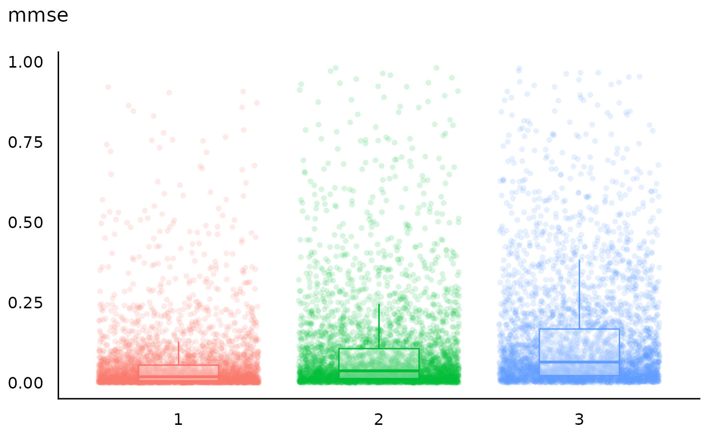
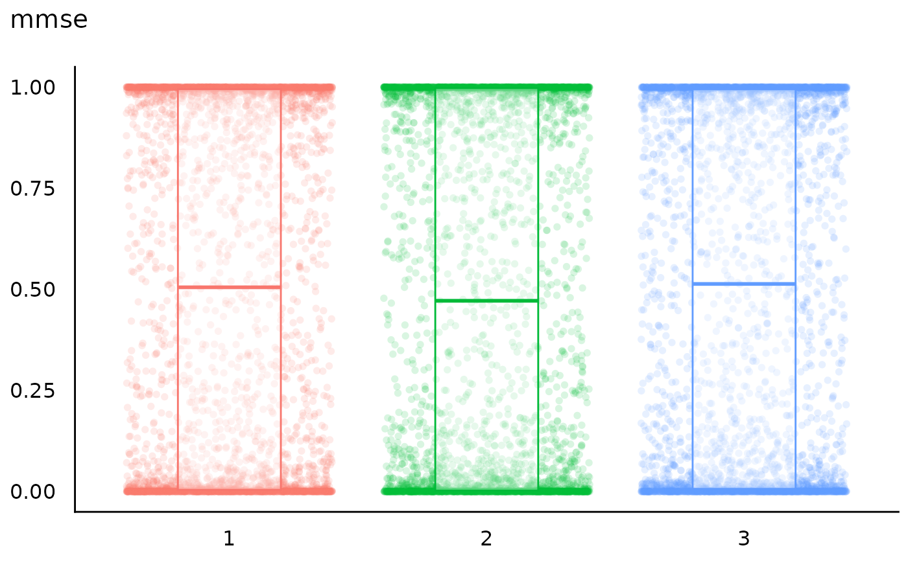

Simulates from the prior marginal distribution of the data to assess the consistency of the chosen priors with domain knowledge (Gabry et al. 2019, Lüdecke et al. 2026) and creates a visualization from the prior predictive checks.
Usage
check_priors(model = NULL, ...)
# S3 method for class 'stanreg'
check_priors(model = NULL, predictors = NULL, ...)Arguments
- model
A Bayesian model of class
stanregorbrmsfit. Note that this model should include draws from the prior predictive distribution. This can be achieved, e.g., by usingbayestestR::unupdate()on the fitted model, or settingprior_PD = TRUE(when using rstanarm) orsample_prior = "only"(when using brms).- ...
Currently not used.
- predictors
Character vector with names of one or more model predictors for which prior predictive checks should be visualized.
Value
A ggplot2 object visualizing the prior predictive distribution,
overlaid with boxplots indicating where the probability mass of the prior
distribution is located.
Details
Prior predictive checks allow researchers to verify whether the mathematical definitions of their priors accurately reflect the assumed underlying reality. Data are sampled from the model using only the prior distributions (the prior predictive distribution), before any observed data are considered. By visualizing the prior predictive distribution, researchers can assess whether their chosen priors generate plausible data. This provides a crucial sanity check on the model's assumptions and their consistency with domain knowledge.
References
Gabry, J., Simpson, D., Vehtari, A., Betancourt, M., & Gelman, A. (2019). Visualization in Bayesian Workflow. Journal of the Royal Statistical Society Series A: Statistics in Society, 182(2), 389–402. doi:10.1111/rssa.12378
Lüdecke D, Makowski AC, Klein J, Ben-Shachar MS and Makowski D (2026) Choosing informative priors in Bayesian regression models: a simulation study and tutorial using Stan and R. Front. Psychol. 17:1856582. doi:10.3389/fpsyg.2026.1856582
See also
See documentation of
?see::plot.see_check_priors
for available arguments to change the plot appearance.
Examples
# \dontrun{
# model with correctly defined priors. outcome is binary, prior
# predictive checks indicate the predicted probability mass based
# on the prior distributions - the resulting pattern aligns with
# our real-world assumptions
model <- insight::download_model("stan_prior_checks_1")
check_priors(model, "mmse")

# model with default (weakly informative) priors, which is poorly
# calibrated. It pushes probability mass almost exclusively to the
# extremes of 0 and 1, leaving the plausible middle range largely
# unsupported
model <- insight::download_model("stan_prior_checks_2")
check_priors(model, "mmse")

# }